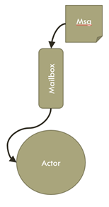
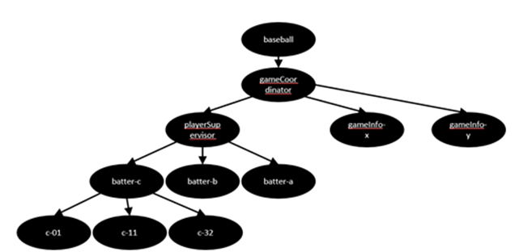
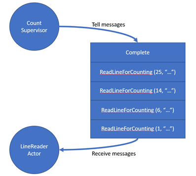

The Actor Model in a C# World
This post is the first in an occasional series on building a distributed system using Akka.NET. Check back as I add to this series.
I was reminded of how much the Actor Model influenced me as a developer when I recently read Petabridge’s post about reflecting on 10 years of building Akka.NET. At first I thought, “oh my goodness - it’s been 10 years!!” and reflected on how much my life has changed over those 10 years. I first came across the actor model (and Akka.NET specifically) around 2015 when I was trying to architect a solution for processing unstructure data in a very dynamic and efficient manner. I had heard of the actor model but hadn’t really dug into it - and it turned out to really help produce a great solution.
(NB: While this post is about using Akka.NET’s implementation of the Actor Model, there are several other frameworks out there, such as Orleans and Proto.Actor. Dapr also contains support for actors.)
The Actor Model is one of those approaches to system design that, at first, struck me as somewhat related to CQRS (another favorite of mine) due to its embrace of message passing and SRP type of classes. As I learned more about it, I discovered its simplicity and elegance, and its power. The Actor Model goes back to the 1970s with Carl Hewitt and has gained popularity over time for its ability to provide a simple approach to building highly scalable and concurrent systems. (It seems that many of the powerful tools we have in our dev toolbelts come from this time period!)
(If you want an enjoyable video showing some greats having a discussion about the Actor Model, check out this informal whiteboard chat with Erik Meijer, Carl Hewitt, and Clemens Szyperski.)
What is the Actor Model
So briefly, what is the Actor Model and why should I use it? If you’ve had to design a system where you need to create a number of threads to handle some type of concurrent processing and ensure that you don’t paint yourself into a deadlock corner, the Actor Model could be a tool to help solve that problem.
Actor Model systems are characterized by communication via immutable messages between objects called “actors”. An actor is generally a small, lightweight object that should be specialized in its scope and can have its own state. An actor can communicate with other actors via messages, which are immutable POCOs. Actors are lightweight, cheap to spin up, and should be easy to tear down. Actor systems can see hundreds, thousands or more actors running at any given time.
Actors, in some actor model frameworks, can create actors of their own (“children”) and can supervise those child actors. These supervisor actors can determine to tear down, restart, or ignore child actors that potentially get into a bad state.
Actors pass messages to each other. In Akka.NET, those messages are handled via a Mailbox, which is a queue for the actor. The actor receives the next message from its Mailbox when it’s ready to process it. As a result, your actors process one message at a time as they are received off the Mailbox queue.

And when I pass a message to an actor, at least in Akka.NET, I either Tell or Ask the actor. If I Tell a message to an actor, I’m passing a message to the actor and not waiting on a response. (Sounds like issuing a command in CQRS!) But if I Ask a message to an actor, I’ll wait on a response from the actor. So Akka.NET supports both asynchronous and synchronous methods of communicating between actors. Generally, I’ve favored the Tell approach to actor communication, but there are situations where you’d want to Ask instead of Tell.
In Akka.NET, actors are arranged in a hierarchical tree structure. As actors create new child nodes, the tree can grow, and the actors higher in the hierarchy can supervise those actors below them in the tree.

In the image above, I’ve created a actor hierarchy to handle the processing of baseball game data - handling batters as individual actors, games as individual actors, and even aspects of batters and games as their own actors (for instance, how to handle what to do on different pitch counts). More on baseball data in future posts!
Hello Actor!
Enough of the talk…let’s see the codez, right!??!
We’ll use a pretty simple example of counting words in a document. I want a count of each unique word in a document and how many times they appear. I’d also like to order that list in descending order.
You can view the whole sample project here in GitHub.
Our console app will do the following steps (which is much like a map-reduce operation):
- Create an
ActorSystemwhich will instantiate the necessary actor plumbing; - Create a top level supervisor actor (
CountSupervisor) which will initiate the counting of words by a number ofLineCounteractorsCountSupervisorwill also receive results from its child actors when they are finished counting wordsCountSupervisorwill also display the final results of the counts when all children are complete
CountSupervisorwill then send a message to aLineActoractor for each line in the document it was passedLineActorwill count the words in the line it was passed, totally up how many unique words and their frequencyLineActorwill then send back toCountSupervisor(its parent) a new message with its word count for that lineCountSupervisorreceives the counts from its children and updates its own internal count- When all children have reported back and no more lines are available for the document,
CountSupervisorwill report its results
We’ll create a dotnet console app and then include the Akka.NET nuget package:
dotnet add package Akka
We’ll assume that I have a little helper method that prompts the user which document they want the word count for (e.g. Declaration of Independence) and the contents of that document will be in a variable named file.
Let’s use Akka.NET 1.5 to create a simple Actor System. The Actor System is essentially the runtime for Akka.NET in your app and instantiates all of the necessary internal actors and threads to manage your actors. You want to create an ActorSystem once, as it’s a fairly heavy object:
var system = ActorSystem.Create("wordCounter");
The ActorSystem, now instantiated, will allow us to create our top level actors and subsequent child actors to process our file and count some words. Let’s create the top level supervisor and pass a file to it that we want to get a word count:
var counter = system.ActorOf(CountSupervisor.Create(), "supervisor");
counter.Tell(new StartCount(file));
If you look in the code, you’ll notice that most of my actors will have a helper static method call Create which creates a shortcut way to instantiate an actor. In CountSupervisor. In the code above, the ActorOf method creates a child actor (and is available on actors to create other children). It takes in a Props object, and creating a helper Create method on my actors is a consistent pattern of actor creation.
public static Props Create()
{
return Props.Create(() => new CountSupervisor());
}
I could also pass in parameters to Create if my actor needs some initial state when it is created.
Passing a message to an actor is a lot like invoking a method in a “traditional” object-oriented system, except my arguments are encapsulated in an immutable structure.
What does that message look like? Well it’s a basic POCO class with a simple property on it:
public class StartCount
{
public readonly String FileName;
public StartCount(String file) { FileName = file; }
}
And the CountSupervisor actor? There’s a bit here, so let’s take a look at what’s going on:
public class CountSupervisor : ReceiveActor
{
...
//some state for this actor
private Dictionary<String, Int32> _wordCount;
private readonly Int32 _numberOfRoutees;
private Int32 _completeRoutees;
public CountSupervisor()
{
_wordCount = new Dictionary<String, Int32>();
_numberOfRoutees = 5; //hard-coded, but should be passed in via config
_completeRoutees = 0;
SetupBehaviors();
}
private void SetupBehaviors()
{
Receive<StartCount>(msg =>
{
var fileInfo = new FileInfo(msg.FileName); //get a handle to the file
var lineNumber = 0;
//create my pool of child actors (RoundRobinPool)
var lineReader = Context.ActorOf(new RoundRobinPool(_numberOfRoutees)
.Props(LineReaderActor.Create()));
using (var reader = fileInfo.OpenText()) //open the file
{
while (!reader.EndOfStream) //loop through each line
{
lineNumber++;
var line = reader.ReadLine() ?? String.Empty;
lineReader.Tell(new ReadLineForCounting(lineNumber, line)); //pass the line contents to child
}
}
//once done, tell everyone we're done with lines!
lineReader.Tell(new Broadcast(new Complete()));
});
Receive<MappedList>(msg => ... }); //for brevity
Receive<Complete>(msg => ...}); //for brevity
}
}
Actors can have state, and so our actors will take advantage of holding on to some state in order to collect word counts and keep track of how many children are complete with their tasks.
In the constructor of CountSupervisor I set up some initial values and then call a helper method SetupBehaviors. This is just a style I use and isn’t necessary, but I like to refactor out my messaging handling into a separate method. You’ll see that I’m defining message handlers for three different messages that CountSupervisor handles: StartCount, MappedList, and Complete. This Receive method comes from my actor inheriting from ReceiveActor, and the method takes a message parameter and then I can process it how I deem necessary. I could call other existing actors, spawn new ones, shutdown children, etc. In the case of StartCount, we’re opening the file, looping through it, creating some LineReaderActors for processing each line of the document, and then telling all children that we’re done (via the Broadcast built-in method that tells all children the Complete message).
There’s an interesting thing in CountSupervisor. Since I don’t need specific child actors to process lines, I’ll just create a pool of child actors and pass lines to them in a round robin fashion using a RoundRobinPool routing strategy. Think of it as dealing cards around a table, and we stop when there are no more cards (aka lines) to pass out.
And that mysterious LineReaderActor? Here we go:
public class LineReaderActor : ReceiveActor
{
public static Props Create()
{
return Props.Create(() => new LineReaderActor());
}
public LineReaderActor()
{
SetupBehaviors();
}
private void SetupBehaviors()
{
Receive<ReadLineForCounting>(msg =>
{
var cleanFileContents = Regex.Replace(msg.Line, @"[^\u0000-\u007F]", " ");
var wordCounts = new Dictionary<String, Int32>();
var wordArray = cleanFileContents.Split(new char[] { ' ' },
StringSplitOptions.RemoveEmptyEntries);
foreach (var word in wordArray)
{
if (wordCounts.ContainsKey(word))
{
wordCounts[word] += 1;
}
else
{
wordCounts.Add(word, 1);
}
}
Sender.Tell(new MappedList(msg.LineNumber, wordCounts));
});
Receive<Complete>(msg =>
{
Sender.Tell(msg);
});
}
}
Again, you see that LineReaderActor inherits from ReceiveActor and handles two messages: ReadLineForCounting (from CountSupervisor) and Complete (from the Broadcast call).
The line reader actor takes the string it was passed and creates a simple Dictionary that keeps count of unique words and their count. When it’s done counting, it sends that Dictionary back to its sender (CountSupervisor in this case). And the Complete handler? Remember the mailbox concept – that Complete message will be processed when LineReaderActor is complete with its other messages, and it will send it back to CountSupervisor to let it know its complete.

So LineReaderActor will process each message in its mailbox in the order received (default FIFO behavior) and will continue processing until the Complete message is received. And this happens for each LineReaderActor. It’s pretty slick how Akka.NET provides this plumbing to let you focus more on your business logic!
Aggregating Results
OK, so our LineReaderActors have are processing messages and are reporting back to CountSupervisor. Let’s look at the two remaining messages for the Count.
Receive<MappedList>(msg =>
{
foreach (var key in msg.LineWordCount.Keys)
{
if (_wordCount.ContainsKey(key))
{
_wordCount[key] += msg.LineWordCount[key];
}
else
{
_wordCount.Add(key, msg.LineWordCount[key]);
}
}
});
Receive<Complete>(msg =>
{
_completeRoutees++;
if (_completeRoutees == _numberOfRoutees)
{
var topWords = _wordCount.OrderByDescending(w => w.Value).Take(25);
foreach (var word in topWords)
{
Console.WriteLine($"{word.Key} == {word.Value} times");
}
}
});
The MappedList message contains the results from a single LineReaderActor and the Count just adds the results to its own count.
And finally, when it receives a Complete message, it updates its count of completed routees (LineReaderActors that it spawned in the round robin pool). If the number of completed routees equals the number of available routees, then the Count knows everyone is complete and it compiles and displays its results to the console.
Wrapping Up
Hopefully with this simple example you can see the power of the Actor Model. It’s definitely not a tool to be used for every problem, so definitely investigate if your problem has a need for a concurrent and scalable solution. If so, maybe the Actor Model is for you.
I’ll update this post over the holidays as I build out additional posts in this series.